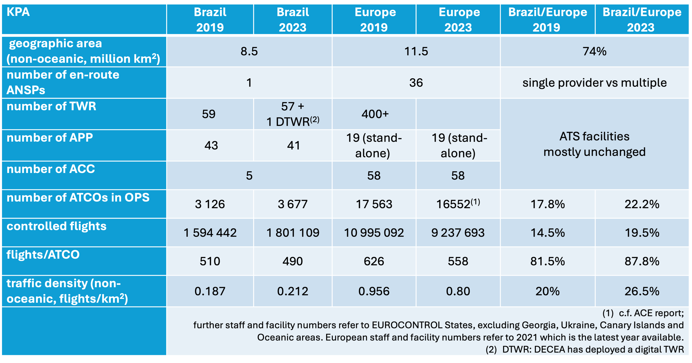
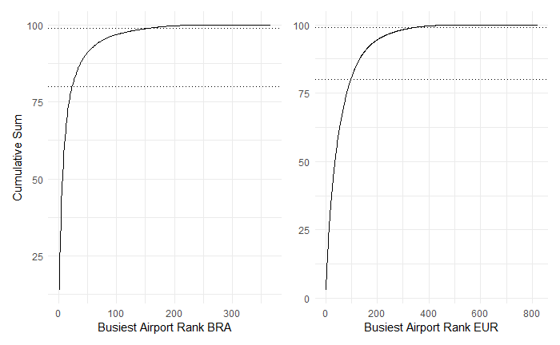

2 Air Navigation System Characterisation
This section presents key characteristics of the air navigation systems of Brazil and Europe. In broad strokes, the provision of air navigation services in both regions relies on similar operational concepts, procedures, and supporting technology. Nonetheless, there are several distinctions between the two systems, which help to account for the similarities and differences in key performance indicators documented in this report.
2.2 High Level System Comparison
Figure 2.1 summarises the key characteristics of the Brazilian and European air navigation system for 2023. Comparing the high-level numbers, Brazil utilised an increased number of Air Traffic Controllers (ATCOs) even during the pandemic period. In contrast, the European system showed a reduction of total ATCOs in service. The different behaviour suggests a difference in work force flexibility between the systems. This may be partly explained by the fact that DECEA shares part of the structure used in basic training with other Air Force training processes. This leads to a more centralised and rigid process, in which abrupt reactions in hiring planning are unwanted due to the lengthy process of calling for candidates according to Brazilian laws related to public service jobs. In Europe, there exists a mix of organisational models and labour contracts ranging from public service to fully commercial organisation. En gros, European providers were able to react to the lower demand levels by delaying/stopping recruitment/training and offering early retirement packages.
Another key difference affecting performance in both regions for this report is the development of air traffic demand. Unlike in Europe, it is interesting to note that Brazil ended 2022 already servicing air traffic movements above the pre-pandemic (i.e. 2019) level. However, as will be shown later, much of this growth was due to the strong increase in general aviation and only to a lower extent in commercial aviation.
Overall, the volume of air traffic also rebounded in Europe. At the end of 2023, the level reached about 90% of the pre-pandemc air traffic (vs about 85% in 2022).
Both regions operate with similar operational concepts, procedures and supporting technology. Yet, Brazil, with lower traffic density related to airspace use, finds probably a more challenging cost-benefit ratio to maintain communication coverage and surveillance for regions with low-traffic. In comparison, the European region faces more considerable challenges in coordinating efforts to adress operational constraints and service the current demand.

This report launched a first analysis of the systems’ network utilisation, taking advantage of the rich experience in comparing two regional aviation systems. Aviation infrastructure is always expensive and complex to maintain, including cost for the provision of air navigation services. The analysis of the facilities’ locations distribution for this service has always basically accompanied the distribution of airports in a region. Recently, technological feasibility modified this logic with the possibility of remote services and still with the possibility of joining more than one remote installation to provide services to several locations simultaneously.
Still, a closer look at the dynamics of these routes and potential connectivity between sites may indicate the potential for capacity to be exploited by the aviation community or that idle capacity is installed without reasonable prospects for use.
In Figure 2.2, we see the distribution of commercial departures for 2022 in both regions. Note that the concentration is proportionally slightly higher on the Brazilian side, with less than 50 airports handlinging 80% of the commercial take-offs that year. In comparison, the European system distributed the same percentage over approximately 100 airports.
For both regions, the aforementioned share of air traffic is centralised in a small subset of airports. On the other hand, the cumulative charts in Figure 2.2 show that a high number of airports service under 1% of the regional air traffic volume. In both systems, this represents more than half of the airports that serve commercial flights. In Europe, approximately 486 airports handle only 1% of the movements, while in Brazil, there are 210 for the same percentage.
Despite being an already historically established distribution and somewhat expected, the aviation sector agents must revisit this data constantly to verify the use of deployed resources and capacity. There is scope for further assessing the service provision at smaller operations with a view to accommodate demand and capacity.
Analysing the part of ANS, specifically on the Brazilian side, the proportion of flights using AFIS aerodromes in this sample is 10.73%. Among them, the busiest airport serviced approximately 4146 commercial departures in 2022 while only 124 were handled at the least busy AFIS aerodrome. In most cases, these operations represent remote airports where aviation is deemed needed to give access to that community. For the European data, a similar pattern is expected. The current data does not allow for a labelling of all aerodromes in terms of ATS service provision (in particular, the identification of AFIS-only services).
Future work may highlight to what extent also resources within the European context are bound to establishing basic connectivity. Further research can explore how both regions can maximise installed capacity, benefit from novel operational or technical concepts, and suggest improvements for ANS provision.
2.3 Regional Approach to Operational Performance Monitoring
The previous report detailed the historic setup of the performance monitoring systems in Brazil and Europe.
The implementation of the performance-based approach is not a fundamental new activity in Europe. The Performance Review Commission (PRC) was established within EUROCONTROL in 1998 aiming to establish and implement an independent European air traffic management (ATM) performance review capability in response to the European Civil Aviation Conference (ECAC) Institutional Strategy. The main goal of the PRC is to offer impartial advice on pan-European ATM performance to EUROCONTROL’s governing bodies. Supported by the Performance Review Unit (PRU), the PRC conducts extensive research, data analysis, and consultations to provide objective insights and recommendations. EUROCONTROL’s performance review system, a pioneering initiative in the late 1990s, has influenced broader forums like ICAO’s global performance approach and the Single European Sky (SES) performance scheme. Collaborating internationally, particularly with ICAO, the PRC aims to harmonise air navigation practices. The PRC produces annual reports (ACE and PRR) and provides operational performance monitoring through various data products and online tools. Continuous efforts are made to expand the online reporting for stakeholders and ensure access to independent performance data for informed decision-making.
It is noteworthy to recall that DECEA, influenced by ICAO publications, embraced a performance-based approach, notably advancing the national state-of-the-art in collaboration with EUROCONTROL. Beginning with the SIRIUS Brazil Program in 2012, DECEA faced challenges defining metrics, but made significant progress after signing a Cooperation Agreement with EUROCONTROL in 2015. DECEA published crucial documents for ICAO’s Global Air Navigation Plan, prompting an organisational transformation and adaptation of practices. Establishing the ATM Performance Section in 2019, akin to EUROCONTROL’s PRU, DECEA accelerated the build-up of expertise in operational performance monitoring. This culminated in the publication of the first Brazilian ATM Performance Plan for 2022-2023. Actively fostering an open culture of knowledge-sharing within South America, DECEA engaged in workshops and seminars, and inviting EUROCONTROL for collaboration.
Finally, it should be noted that the recurrent use of indicators by EUROCONTROL and DECEA and the close technical collaboration taking place during the analysis periods for joint conclusions enrich not only the two regions but also have a global impact. Embracing transparency, both agencies made indicators and databases publicly accessible, perpetuating a culture of reciprocity and transparency for mutual advancement. Looking for broader validation and harmonisation, the lessons learned from this scheme are systematically shared with the multi-national Performance Benchmarking Working Group (PBWG) and the Performance Expert Group of the ICAO GANP Study Group, which deals with the development of GANP Key Performance Indicators (KPIs). In this respect, this collaboration between both parties serves as a role model for ANS performance management on a global level.
Updated dashboards, previous work, and supporting historical data are available at https://ansperformance.eu/global/brazil/ or https://performance.decea.mil.br/.
2.4 Summary
While both regions operate on similar operational concepts and technologies, there exists key characteristics and distinctions in both regions. One of the key differences is the overall organisation of air navigation services. Brazil’s air navigation services are centralised under DECEA, overseeing all airspace control and contributing to national defense. In contrast, Europe’s air navigation services are provided by multiple entities and ANSPs operating predominantly within their national state boundaries and FIR borders.
Also remarkable is the comparison of the number of air traffic controllers between Brazil and Europe during the pandemic. This revealed contrasting trends. Brazil experienced an increase in ATCOs, while Europe witnessed a notable reduction. This disparity underscores a significant difference in the systems’ responsiveness, partly attributed to Brazil’s centralised and rigid hiring process. At the same time, European providers operate with greater independence and flexibility enabling easier adjustments to the management of the ATCO workforce.
The distribution of commercial flights in 2022 indicates that only a subset of airports handle 80% of commercial take-offs. The concentration effect is higher in Brazil than in Europe. On the other hand, a high number of airports operating commercial flights represent handle only a marginal share of 1% of the movements in both systems. This duality may inform decision-makers about potential performance benefit pools with a view to allocate scarce ANS resources and capabilities and ensure the proper balancing of demand and capacity.
This report documents the close collaboration between DECEA and EUROCONTROL. The effort benefits the two regions and contributes globally by sharing insights and lessons learned with international aviation communities, aiding the development of ATM performance management worldwide.